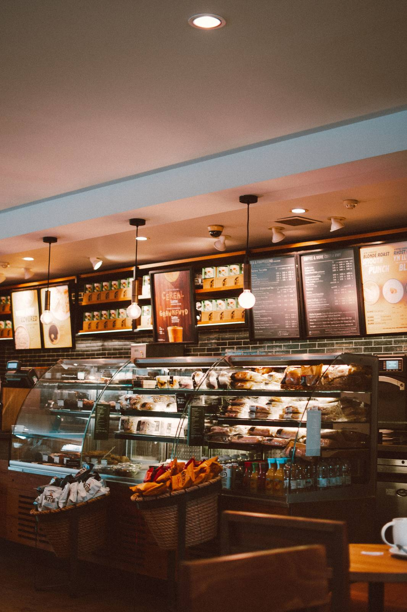

The Space

Stock photo: cappuccino with latte art
Stock photo: warm cafe interior with seating

Stock photo: close-up of roasted coffee beans

Stock photo: iced coffee served in a cafe
A campus corner with character
Local artwork on the walls, indoor and outdoor seating, and room to settle in. A student hangout near the University of Arizona.
